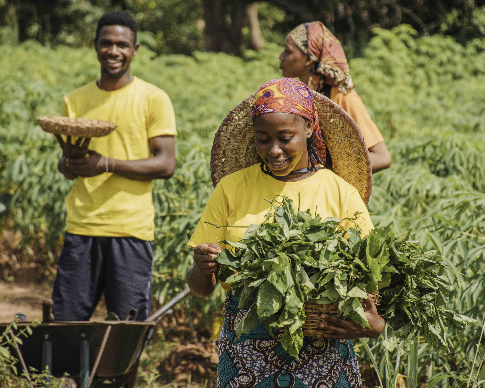
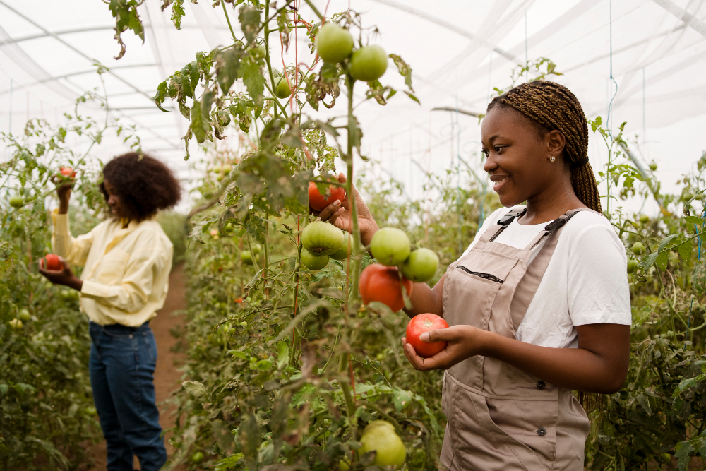
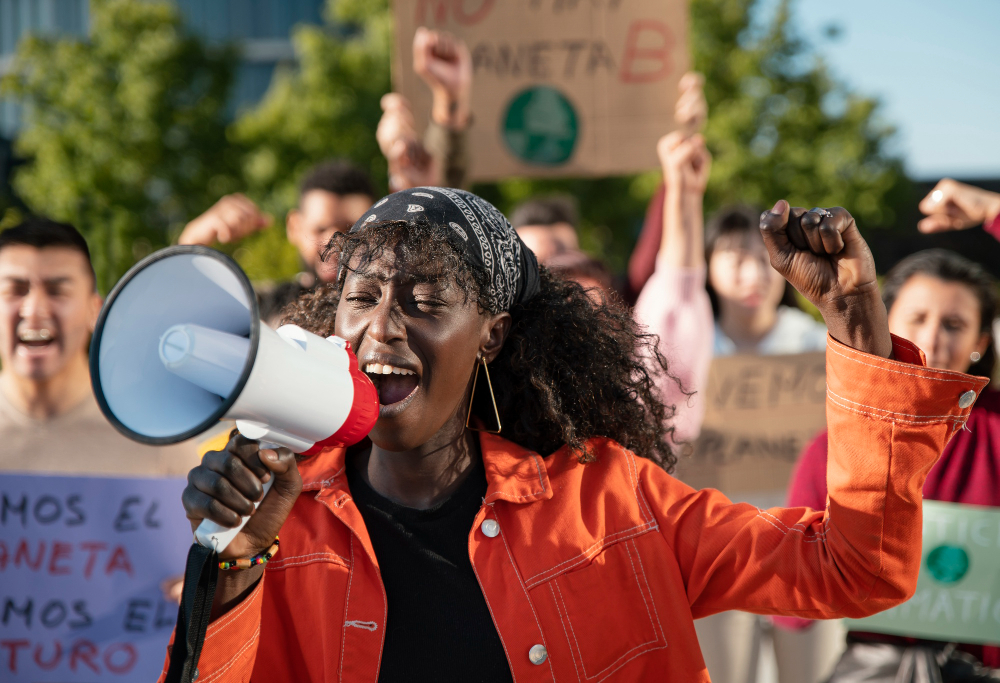
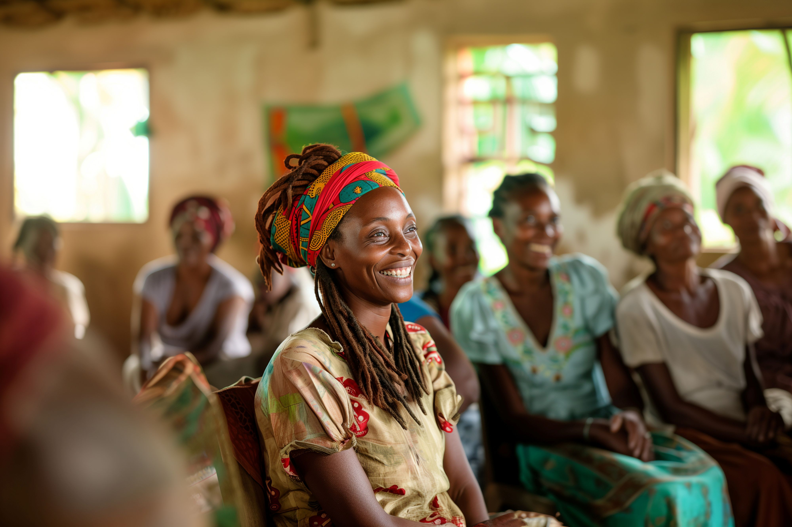
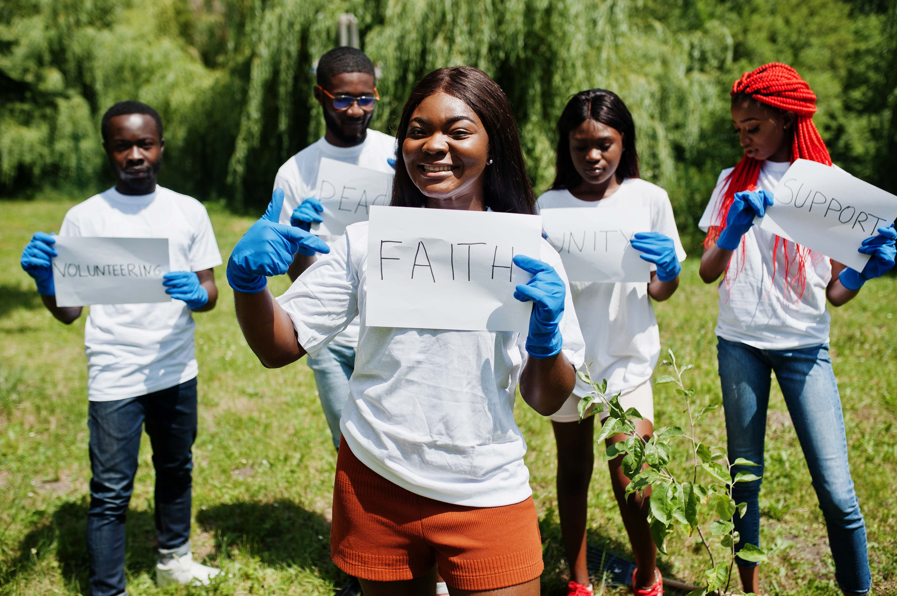
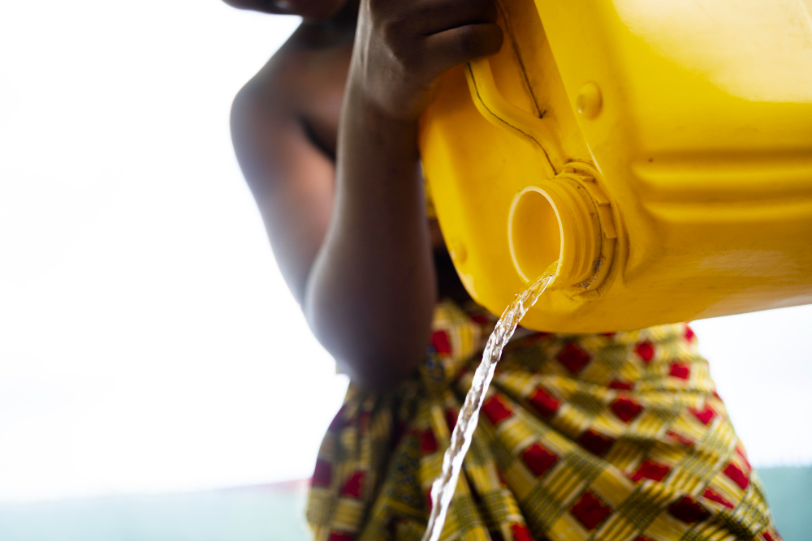

LOADING ADADO...
LOADING ADADO...
North Carolina | Machakos | Kitui | Makueni
Building a transformational bridge between the Kamba diaspora and our homeland — through
Empowering the Kamba community through sustainable agriculture, educational excellence, and socio-economic growth — in North Carolina and across Kenya.

ADADO — the Akamba Diaspora Advancement & Development Organization, Inc. — was established by Kamba community members in North Carolina to create lasting change both at home and in Kenya. We are a bridge between two worlds.
To be a transformational force for the Kamba Community in North Carolina and Kenya, fostering sustainable development, educational excellence, and socio-economic growth.
Empower the Kamba community through sustainable agriculture, centers of excellence, civic engagement, faith-based coalitions, and inclusive community dialogues.
From drought-resistant farming to centers of excellence — our programs create lasting change.

Promoting drought-resistant farming techniques and modern agri-technology to combat food insecurity in Machakos, Kitui, and Makueni counties.
Explore Program →
Establishing training and development centers that uplift Kamba people and create sustainable opportunities for future generations.
Explore Program →
Encouraging diaspora participation in social responsibility initiatives, leveraging expertise and resources for community development in the U.S. and Kenya.
Explore Program →
Facilitating inclusive community dialogues through town halls to ensure a holistic, "we're all in this together" approach to development.
Explore Program →
Building strong, faith-centered and community-oriented partnerships to support ADADO's foundation projects and initiatives in both nations.
Explore Program →
Addressing the challenges of drought and improving food security through innovative water harvesting and irrigation projects.
Explore Program →Our work is deeply rooted in the ancestral Kamba homelands. We focus our development efforts across three arid and semi-arid counties in Eastern Kenya where the Kamba people have lived for centuries — and where the need for sustainable development is greatest.
Semi-arid region with recurring drought challenges requiring innovative water management
Rich cultural heritage with a resilient, entrepreneurial Kamba people ready for upliftment
Strategic location with growing infrastructure opportunities for agricultural investment
Join hundreds of Kamba community members — in North Carolina and in Kenya — who are working together to create a brighter, more prosperous future. Your support transforms lives.